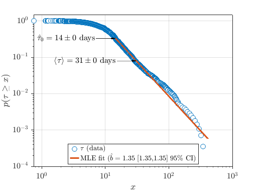
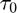
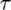
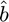
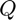
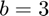
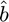
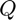
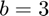
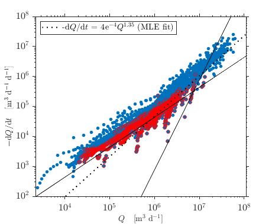

Baseflow Recession Analysis Toolbox Examples
These examples provide an introduction to the toolbox. The demos folder contains additional scripts with examples.
Contents
Description
In this example, we apply baseflow recession analysis to daily streamflow data measured in the Kuparuk River Basin on the North Slope of Alaska.
Detect recession events from a timeseries of daily streamflow
Set the algorithm options
opts.Events = bfra.setopts('events'); opts.Fits = bfra.setopts('fits','drainagearea',8.6545e9); opts.Global = bfra.setopts('globalfit','drainagearea',8.6545e9, ... 'aquiferdepth',0.5,'streamlength',320000,'isflat',true,... 'plotfits',true);
Load the example data and run the event detection algorithm
load dailyflow.mat
Events = bfra.getevents(T,Q,R,opts.Events);
The output structure Events contains arrays that are the same size as the input time T, streamflow Q, and rainfall R arrays, but all non-recession flows are set nan.
Fit individual recession events
We pass the Events structure to fitevents which cycles over each individual recession event and fits a curve to estimate the parameters. Because curve-fitting all events is time-consuming, we can load pre-computed fits instead of computing them.
getfits = false; if getfits == true [K,Fits] = bfra.fitevents(Events,opts.Fits); else load Events end
The output structure Fits is similar to the input Events, except that the streamflow data has been fit using an exponential timestep to reduce the impact of measurement noise on the measured data. In addition, the rate of change of streamflow,  , is included as an element of Fits.
, is included as an element of Fits.
The output table K contains the parameters of the fit to each individual recession event. These parameters form the basis for subsequent analysis.
Global fit
Once the individual events have been fit, we conduct inference testing on the sample population.
First we transform the observed streamflow data into a timescale parameter tau using the fitted parameters in K
[tau,q,dqdt,tags] = bfra.eventtau(K,Events,Fits,'usefits',false);
Then we pass that into a custom Pareto distribution fitting routine to estimate the population-sample-scale value of the parameters a and b:
TauFit = bfra.plfitb(tau,'plot',true,'boot',false);
The TauFit structure contains information about the Pareto Distribution fit including the minimum bound, , the expected value, , and the parameter estimate $\hat{b}. Extract these parameters for the next steps.
bhat = TauFit.b; bhatL = TauFit.b_L; bhatH = TauFit.b_H; tau0 = TauFit.tau0; tauhat = TauFit.tau; itau = TauFit.taumask;
Estimate parameter at the population-scale using the point-cloud intercept method
 is the intercept of the line with slope  that passes through the median value of streamflow . After fitting , display the fit using pointcloudplot. Add three 'reflines': one for 'early-time' which fits a line of slope  to the 95th percentile of the point cloud, one for 'late-time', which fits a line of slope blate to the median of the point cloud, and one 'userfit' which fits a line of userab = [intercept slope] to the median of the point cloud.
is the intercept of the line with slope  that passes through the median value of streamflow . After fitting , display the fit using pointcloudplot. Add three 'reflines': one for 'early-time' which fits a line of slope  to the 95th percentile of the point cloud, one for 'late-time', which fits a line of slope blate to the median of the point cloud, and one 'userfit' which fits a line of userab = [intercept slope] to the median of the point cloud.
[ahat,ahatLH,xbar,ybar] = bfra.pointcloudintercept(q,dqdt,bhat,'envelope','mask',itau); h = bfra.pointcloudplot(q,dqdt,'mask',itau, ... 'reflines',{'early','late','userfit'},'blate',1, ... 'userab',[ahat bhat],'addlegend',true,'reflabels',true);